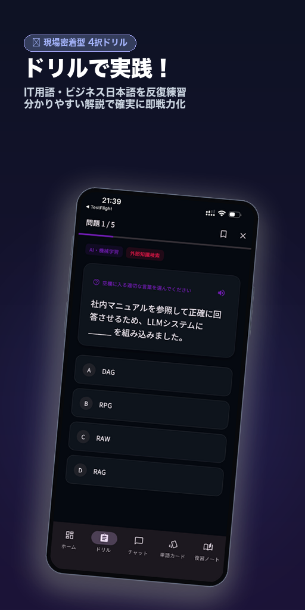

</> 実践的な問題でしっかり定着！
ドリルで実践！
ドリルで実践！
ITに特化した日本語問題でスキルを身につけよう
ブランチ運用、デプロイ、状態管理など現場の実務問題が満載。
「プルリクエストを出す前に、最新のmainブランチに_____してください。（リベース）」のように、 日本の開発チームで日常的に使われる表現を4択形式で演習。単語の意味だけでなく、「どの場面でどう使うか」の判断力を鍛えます。
-
実践的な4択問題： 日本のIT現場のチャットや設計書から厳選したリアルな出題。
-
7言語の母国語解説： 英語・ベトナム語・中国語など母国語で微妙なニュアンスを理解。
-
音声読み上げ（TTS）： 正しいアクセントやイントネーションも耳からインプット。
